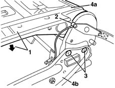

7050A54 rear seat squab ribbing - r + r
- Path
- Procedures > 70 FITTINGS > 7050 REAR SEATS > 7050A rear seat assembly > 7050A54 rear seat squab ribbing - r + r
- Kind
- repair procedure (removal / refitting; the operation number is the code)
- Applies to
- all engines; all production periods
- Interactive page
- https://sloeber94.github.io/elrnDB-lYpsln/en/#/2429648
Applies to: all engines; all production periods
 Removing
Removing
 Refitting
Refitting7050A87 JOINT COVER GUARD for (one), left or right individual seat - R.R. with seat removed
7050B12 rear seat head restraint - r r (all)
7050D30 Rear seat BACKREST COVER - R.R.
1. Lower the frame onto the cushion frame.
2. Disconnect the control cable on both sides of the seat.
3. Undo the backrest fixing bolts on both sides of the seat.
4. Remove the backrest frame (4a) from the seat support frame (4b).

Applies to: all engines; all production periods
Refitting
RemovingCheck that the frame is not damaged.
Position the frame on the seat support frame and secure it using the bolts.
Connect the control cable.
7050D30 Rear seat BACKREST COVER - R.R.
7050B12 rear seat head restraint - r r (all)
7050A87 JOINT COVER GUARD for (one), left or right individual seat - R.R. with seat removed